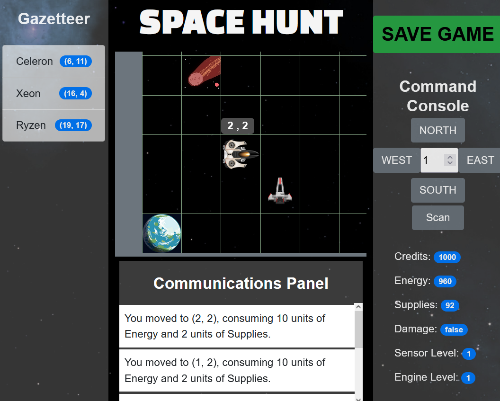

Space Hunt - CS300 Project
In CS300 with Warren Harrison we developed Space Hunt, and intergalactic hunt for the KokaKola Recipe! Be ware Bad Max is after you at all times! This project was done in conjunction with 5 other team members, we used Javascript, with some HTML and CSS.
In CS300 with Warren Harrison we developed Space Hunt, and intergalactic hunt for the KokaKola Recipe! Be ware Bad Max is after you at all times! This project was done in conjunction with 5 other team members, we used Javascript, with some HTML and CSS.

Food Facts Voice Assistant
This term in my Voice Assistants class we learned how to work with voice assistant applictions like Alexa, Siri, or Google Home. For my project I made a voice assistant that can be helpful with food facts. If you wish to interact with it, click the plus sign.
This term in my Voice Assistants class we learned how to work with voice assistant applictions like Alexa, Siri, or Google Home. For my project I made a voice assistant that can be helpful with food facts. If you wish to interact with it, click the plus sign.
Card Titleclose
You can ask for nutritional facts, ask for recipies with ingredients you have at home, hear a joke about food, or just hear a random food fact.

Android App
In Advance Programming in Java with David Withlock class, we continuously developed an appointment book. It started off by just entering one appointment in the command line for one single user, then evolved to being a RESTful application with appointments coming from the command line, or through a browser for many different user's and their own appointment books. We concluded the class by developing the appointment book as an Android app. This was a fun class, really enjoyed the challenges David would through at us. By implementing it in a Test Driven Development style it allowed us to make sure we were not breaking existing functionality when adding new ones.
In Advance Programming in Java with David Withlock class, we continuously developed an appointment book. It started off by just entering one appointment in the command line for one single user, then evolved to being a RESTful application with appointments coming from the command line, or through a browser for many different user's and their own appointment books. We concluded the class by developing the appointment book as an Android app. This was a fun class, really enjoyed the challenges David would through at us. By implementing it in a Test Driven Development style it allowed us to make sure we were not breaking existing functionality when adding new ones.